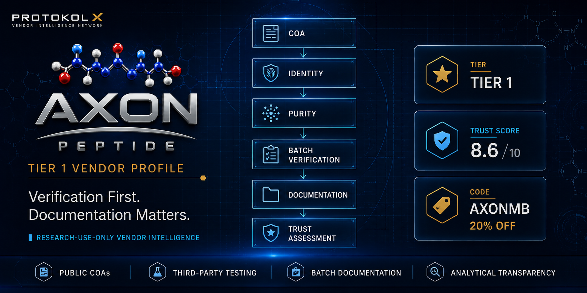

AXON Vendor Intelligence Profile
AXON is a physician-led research vendor focused on documentation, verification architecture, analytical transparency, and batch-level traceability.
This profile summarizes publicly observable verification signals and applies the Protocol X assessment framework.
Vendor Intelligence Brief
BLUF
AXON is a documentation-forward research vendor emphasizing verification systems, traceability, and analytical transparency. The strongest observable signals are its public verification architecture, batch documentation practices, and extensive testing disclosures.
Strengths
- Documentation-first approach
- Public verification repository
- Analytical transparency emphasis
- Batch traceability architecture
- Physician-led positioning
- Strong verification infrastructure
Considerations
- Premium pricing compared to some competitors
- Growing public track record
- Ongoing monitoring remains appropriate
Best Fit
Researchers who prioritize documentation quality, verification systems, and transparency over lowest-cost purchasing options.
Verification Architecture
The Protocol X review process prioritizes objective documentation signals over marketing claims. Verification begins with analytical documentation and proceeds through identity, purity, traceability, and consistency review before final assessment.
01COA Review
Analytical documentation is reviewed first.
02Identity Verification
Identity signals are assessed against available records.
03Purity Assessment
Purity disclosures are evaluated for clarity and consistency.
04Batch Verification
Batch-level traceability is checked for continuity.
05Documentation Review
Repository depth and accessibility are considered.
06Trust Assessment
Signals are consolidated into the final assessment.
Verification & Documentation
Testing SignalHPLC Testing
Identity SignalLC-MS Identity Confirmation
Screening SignalSterility Testing
Screening SignalEndotoxin Testing
Screening SignalHeavy Metals Testing
TraceabilityBatch Traceability
RecordsChain of Custody Documentation
RepositoryVerification Repository
Trust Snapshot
Protocol X Trust Score8.8 / 10
PX Verification LevelPX-3 Advanced Analytical
Vendor CategoryResearch Vendor
LocationAtlanta, Georgia
Last ReviewedMay 2026
Featured Research Categories
GHK-Cu
NAD+
Semaglutide
Semax
BPC-157
Retatrutide
Protocol X Assessment
AXON currently demonstrates one of the stronger documentation and verification architectures observed within the Protocol X review framework. Public verification resources, batch traceability practices, and analytical transparency contribute positively to its assessment profile.
The strongest observable signals are documentation depth, testing visibility, and verification structure. AXON appears positioned toward users who prioritize transparency and traceability over budget-focused purchasing decisions.
Vendor Information
Vendor TypeResearch Vendor
Business ModelDocumentation-Forward
Verification RepositoryAxonVerified
FocusAnalytical Transparency
LocationAtlanta, Georgia
Disclosure
Protocol X may receive affiliate compensation when visitors access vendor websites through links on this page.
Affiliate relationships do not influence Protocol X assessments, verification levels, rankings, or intelligence briefs.
Information is provided for educational and research purposes only.
AXON Vendor Profile
Continue to the vendor website or return to the Protocol X vendor index.